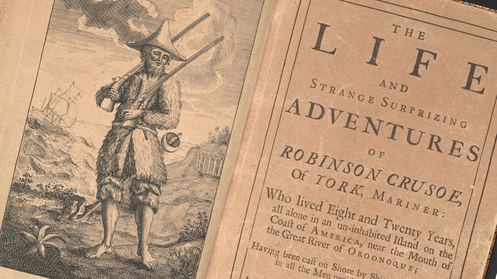
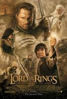
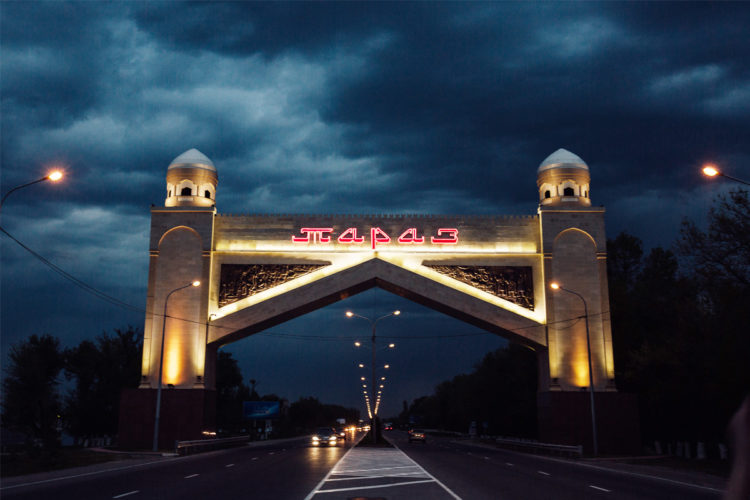
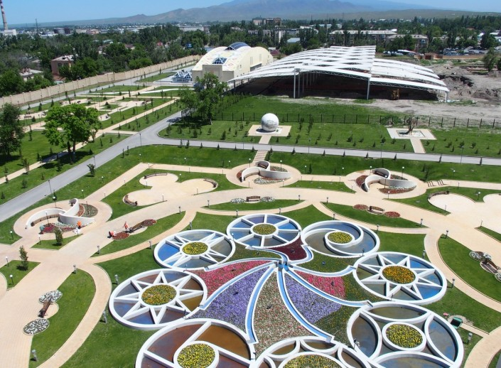

My name is Nurbolat Amilbek and I am 18 years old.
I'm a 1-year student at Astana IT University in Educational programm "Software Engineering".
| Date | Event |
|---|---|
| 2007(September)-2008(May) | Study at Small Academy(zero grade) |
| 2008(September)-2020(May) | Study at school №44 after Shona Smakhanuly |
| 2020(September)-present-time | Study at AITU |
| 2020-present-time | Work at AITUmation |
In my free time I prefer to read books, watch movies or go for a walk. When I was 7-12 years old, I practiced music and went to the piano and button accordion circles. I also studied English as I thought it would be useful for me for the future and I needed it.
|
My favourite book is Robinson Crusoe that written by Daniel Defoe. Firstly, it was the first book, what I have read, and also, it's a very interesting book about adventure of a man in uninhabited island. |
 |
My favourite movies are all the parts of The Lord of the Rings.
|  |
I'm from Taraz and I have lived in this city for 18 years Taraz is an ancient city of Kazakhstan with a history of 2000 years. Taraz is a city and the administrative center of Jambyl Region in Kazakhstan, located on the Talas (Taraz) River in the south of the country near the border with Kyrgyzstan. It had a population of 330,100 (1999 Census), up 9% from 1989, making it one of the fastest-growing cities in the country, after Nur-Sultan and Turkistan. |
Sights of Taraz
|
 |
|
Astana IT University is a leading competence center for digital transformation in Central Asia. Astana IT University is the leading center of competencies for digital transformation in Central Asia, the aim of which is to train highly qualified specialists in the field of digital economy based on interdisciplinary technologies and ensure digital transformation through training, research and successful innovation. Astana IT University is a leading center of competencies for digital transformation in Central Asia. Training of highly qualified specialists in the field of digital economy based on interdisciplinary technologies. |